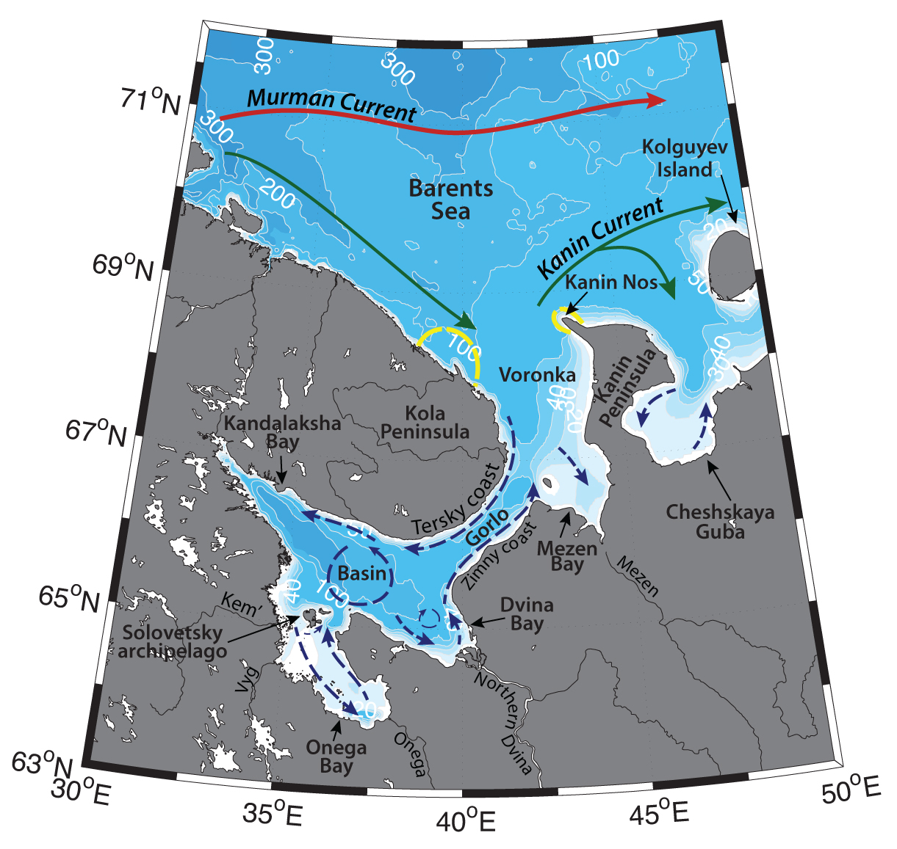

Schematic water circulation patterns and geographical place names in the White Sea region. Adopted from Dobrovolskyi & Zalogin (1982), Filatov et al. (2005), Kravchishina et al. (2015). Dashed line marks the studied region.
Kanin Cape (known as “Kanin Nos”) and Murmansk coast are regions surrounding the outer border of the White Sea – a shallow inner Russian Arctic sea, semi-enclosed in a long gulf south–east of the Kola Peninsula. The Voronka Strait between Cape Kanin and the Kola peninsula joins Barents and White seas (Dobrovolskyi & Zalogin, 1982). Hydrography of the region is determined by the Murman Coastal current, outflow from the White Sea (controlled by river discharge), tides, seasonal ice cover and complicated topography of the surrounding regions (e.g. Filatov et al., 2005).
Murman Coastal Current is a continuation of the North Cape Current, which carries relatively warm and saline Atlantic water (T>3°C, S>35, AW; e.g. Loeng, 1991, Dalpadado et al., 2003) from the Norwegian Atlantic Current. On its way eastwards on the Barents Shelf Atlantic Water gets transformed (cooled and freshened due to the influence of continental discharge, as well as atmospheric forcing). Murman Coastal Current follows the coast further towards the White Sea and carry so called Murman Coastal Water (1°C<T<9°C, 33.8<S<34.7). Part of the Murman Coastal Current enters the Voronka Strait on its western side (Loeng, 1991), while another part veers northeastward near the entrance to the White Sea, and is known as the Kanin Current, which flows toward the west coast of Novaya Zemlya.
The outflow from the White Sea dominates the eastern part of Voronka Strait and consists mainly of waters from Northern Dvina, Onega, Mezen, Kem and Vyg and other smaller rivers (Filatov et al., 2005). Freshwater discharge (around 231 km3; Filatov et al., 2005) from the rivers govern the salinity of the White Sea – around 24 to 27 (Berger & Naumov, 2000). During the flood season, river waters rise the sea level, and force an outflow from the White Sea into the Barents. During wintertime the overflow is restricted and ice can be imported from the Barents Sea into the White, bring particulate material and biogeochemical species (Howland et al., 1999). Freshwater discharge forms local fronts between riverine and sea waters, and a prominent stratification. These fronts attract high concentrations of nutrients, phytoplankton and zooplankton and induce high productivity.
Onega, Northern Dvina and Mezen rivers all bring warmer waters, compared to the open seawater; shallow shelf of the river estuaries also allows for early warming of the waters. Seasonal variation of temperature of the White Sea surface water might reach 20°C (Howland et al., 1999). The vertical extension of the surface waters is controlled by the wind and convective mixing. Winter mixing bring the temperatures to 0°C through the water column, with the minimum temperatures in the near surface layer (e.g. around -1.2 °C – -1.7 °C in the Voronka Strait; Filatov et al., 2005).
Gorlo Strait – a relatively narrow (~40 km width) and rather shallow (~37 m) strait between the inner (Dvina, Onega, Kandalaksha bays and the Basin) and the outer (the Mezen Bay and Voronka Strait) parts of White Sea –restricts the exchange of bottom waters between those regions to some degree, hence bottom layer of the outer part is influenced by the Barents Sea Water (e.g. Filatov et al., 2005) Unique circulation regime in the Gorlo strait is a crucial phenomenon, which determines the ecosystem structure: it hinders the exchange in the bottom layers, while providing ventilation for the inner basin.
The water exchange is enhanced by the semidiurnal tides, with the amplitude increasing from 1 m on the south of White Sea to 10 m in Mezen Bay – one of the largest amplitudes in the Arctic Ocean. Tidal currents are rather weak in the open seas, in the Basin of the White Sea they are comparable with the speeds of persistent currents (10-15cm/s; Filatov et al., 2005); but they significantly strengthen in the bays. Tides are stronger and higher along the Tersky coast (where there is an inflow of Barents Sea water), compared to Zimny coast (where there is a runoff of river discharge). Tides enhance mixing and bring nutrients to the surface, but also hinder the inflow of Barents Sea water into the White Sea, as formation of the tidal bottom-boundary layer leads to a substantial increase in the energy dissipation. (Filatov et al., 2005)
During wintertime Voronka Strait is covered with drifting ice, locally formed, as well as imported from the Barents Sea. In the inner part of White Sea ice starts to freeze up in October – November, with the earliest ice appearing in the Mezen Bay and latest in Gorlo along Tersky Coast and in Voronka. Ice cover usually lasts through May, first disappearing in Voronka region in March–April. Polynyas may form due to strong currents on the surface next to the shore.